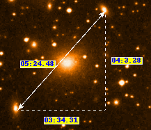

If you have an image with an appropriate set of FITS headers (from
say the Digital Sky Survey, or other on-line sources of images) or an
NDF with a defined WCS component, then will GAIA display the current
coordinates in the Alpha and Delta readouts.
You view coordinates in all the built-in systems using the Show all coordinates toolbox.
To see the RA and Dec offsets between two positions just place your
cursor over an object and then press and hold down button 3. Now move
the mouse to another point on the image and the offsets between then
will be shown using a rubber band ruler.

If your image is displaying RA and Dec values then you can also plot a grid overlaid on it (actually you can also just use plain pixel coordinates). Just open the "Image-Analysis" menu and select the "Overlay axes..." item. This creates a new toolbox with many options for controlling the appearance of the grid.
Help with using the grid plotting toolbox is available:
If you need to change the coordinate system of your image (so that for instance it shows positions in FK4 instead of FK5, or if you'd like to measure a Galactic position) then you can do this using the "Celestial coordinates..." and "Built-in coordinates..." toolboxes. The difference between changing the celestial coordinates and built-in ones, is that you can request any celestial system supported, as along as your image has at least one celestial system already. Whereas the built-in ones are just those present in whatever calibration your image has (for FITS this tends to be just grid coordinates and your initial celestial system, for NDFs there can be many additional systems, like pixel coordinates).
Help with using the celestial coordinates toolbox is available:
Help with using the built-in coordinates toolbox is available:
Note that you can see the coordinates in all the built-in systems using the Show all coordinates toolbox.GAIA offers you a great deal of flexibility in setting and checking your image's astrometry information (that is the information used to define how positions on your image correspond to positions on the sky). There are four main toolboxes associated with this activity. Usage hints are available for each, but read this overview section first.
If you want to check the astrometry of your image then you can compare any reference positions that you have (from say published catalogues) with your image by simply pointing at the position on the image and reading off the sky coordinates. You can also use the on-line catalogues available under the "Data-Servers" menu in the main window. These will draw markers on your image at the positions of any objects that are located.
You can also plot a grid overlay (see above), from which you can estimate the directions of the local axes, read-off separations etc. You can also get the distance between any two points on your image (in arc minutes), by using the rubber band ruler (see above).
If you need to calibrate your image astrometry, then you can go about this in several different ways:
Suitable reference positions are easy to get in GAIA as you can query on-line catalogues, such as the Guide Star Catalogue (GSC) or US Naval Office catalogue (USNO) or you can use a pre-calibrated reference image (such as a DSS image) to select fiducial marks (i.e. stars and galaxies). The main idea is to get things good enough so that you can recognize the objects that are displayed from the catalogue (you can then proceed to move the projected reference positions until they are in the correct place and completely redo the fit).
The most likely starting point given an uncalibrated image is to display it then retrieve a DSS image of the same part of the sky, in another window, then use the "Fit to star positions..." toolbox to transfer reference positions from the DSS image. These positions can then be used to initiate a first pass calibration.
Now query the USNO catalogue and overlay all the objects that it has, remove the obvious mistakes (blends etc.) and redo the fit. More accurate solutions can be done if you select background galaxies.
As you can probably see by now it is valid to mix and match the ways of calibrating your data, you just pick a method or scheme that suits your particular data.
To retain any calibration changes that you make you must save the displayed image to disk (using the "Save as..." item in the "File" menu in the main window). Once saved you can then re-read the image into GAIA and the calibration should be available again (note that this may not work with other software, see the next topic).
GAIA uses the Starlink AST library (SUNs 210 and 211) to do its astrometry. This means that it can read many different types of astrometry information stored in FITS headers, such as those "standards" used by AIPS, the newer FITS-WCS system (see http://www.cv.nrao.edu/fits/documents/wcs/wcs.html) and the DSS. AST will also read astrometry information stored in its own native form. This may be available with NDFs, or FITS images you've saved using GAIA.
This is all very useful, but there is a problem when it comes to writing out new astrometric calibrations or modification of existing astrometries. The problem is that it is not always possible to convert the AST native form (which is what is being used when a calibration is being created or tweaked) into a FITS representation of some kind (GAIA always attempts this).
Obviously if the calibration is not written out using FITS then this limits the possibilities of using this information in other astronomical software (in fact using FITS-WCS as a storage form is also potentially problematic, as it is not yet a standard and is still quite new). The only way to see if your calibration can be converted to FITS is to try and save the image. If it fails then you'll get a warning message. If this is a real concern to you then you can increase the chances of this conversion being successful if you define a new calibration (the chances of writing out a modified DSS calibration are very small) and keep the modifications (i.e. the fit solution, or tweak) as simple as possible.
If you are just using GAIA (and possibly other Starlink software that uses AST) then you'll always be able to save and restore your astrometry as GAIA always saves an AST native copy with your image.
Getting an accurate astrometric solution to an image requires some effort, you should always check that the solution found is good enough for your purposes. Currently GAIA has no facilities for correcting for plate distortions.